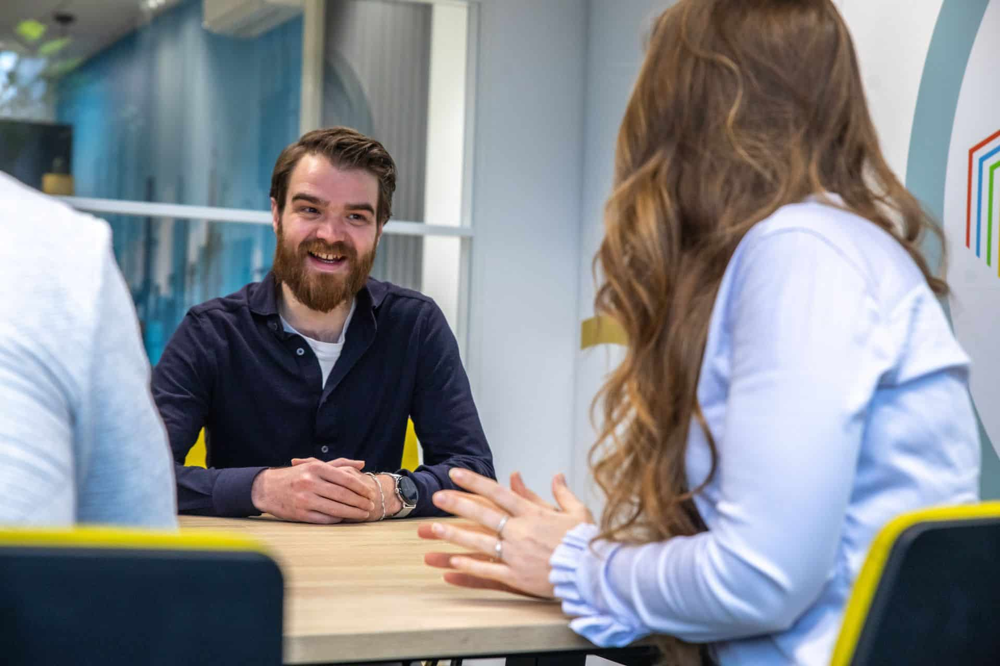
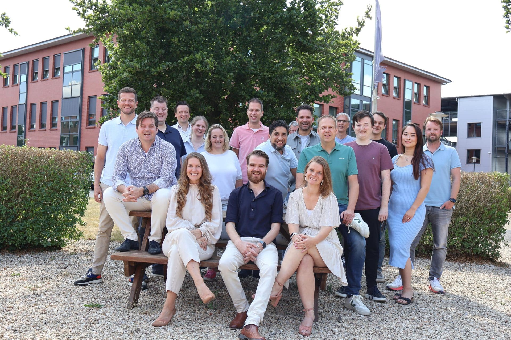
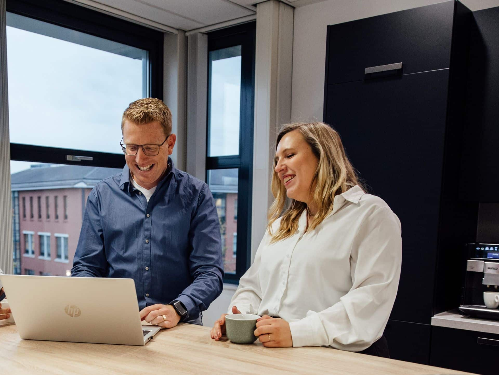
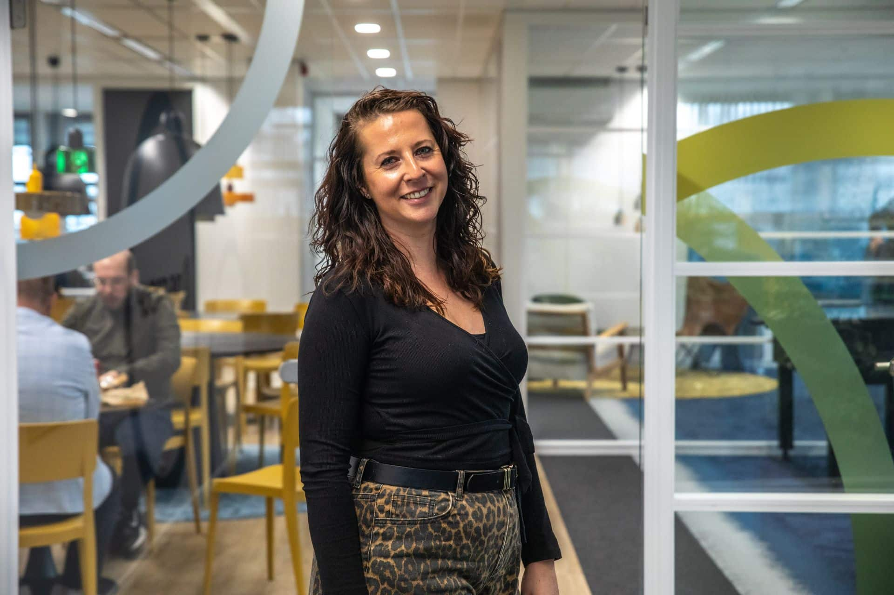

Specialist in Microsoft Business Central & 4PS Construct
DIS Group is een betrokken Business Central, 4PS Construct en Power Platform specialist. DIS Group richt zich volledig op het begeleiden van implementaties en het optimaliseren van bedrijfsprocessen. Wij hebben een focus op bedrijven in de bouw, GWW / Infra en Installatie.
DIS Group is een team van passievolle, deskundige, eigenwijze, gezellige, behulpzame collega’s die met elkaar een enorme kennisbank vormen in ons vakgebied.
Neem contact op

Wat doet DIS Group?
DIS Group ondersteunt bedrijven met de inzet van slimme en toekomstbestendige oplossingen rondom Microsoft Business Central en 4PS Construct. We leveren zowel tijdelijke als structurele ondersteuning en denken actief mee over procesverbetering en digitalisering.
Onze diensten bestaan onder andere uit:
- Consultancy voor 4PS Construct
- Functioneel beheer en applicatiebeheer
- Implementatie- en optimalisatieprojecten
- Projectmanagement
- Development en maatwerkoplossingen
- Power Automate en Power Apps
- PowerBI oplossingen
Door onze combinatie van technische kennis, branche-ervaring en pragmatische aanpak zijn wij een betrouwbare partner voor organisaties die willen groeien en professionaliseren.

Wie wij zijn als organisatie
DIS Group is een hechte, warme en informele organisatie met een vast team van ervaren consultants en developers, aangevuld met een netwerk van zelfstandige specialisten. Samen vormen we een stabiele en flexibele partner voor bedrijven die met 4PS Construct werken.
Onze cultuur is open en mensgericht. We werken hard voor onze klanten, maar vinden ontspanning en plezier minstens zo belangrijk. Denk aan samen lunchen, korte lijnen, een goede dosis humor maar ook: tijd voor een potje tafelvoetbal, biljart of een kaartspelletje.
Wij geloven dat een prettige werksfeer direct bijdraagt aan betere dienstverlening. Tevreden en gedreven mensen zorgen voor tevreden klanten.
Ons verhaal
Ons team

Onze werkwijze
Deskundig
Bij DIS Group volgen we de ontwikkelingen rondom Microsoft Business Central en 4PS Construct op de voet. Zo kunnen we onze klanten blijven voorzien van actueel, onafhankelijk en goed onderbouwd advies. We stellen de klant centraal en begeleiden zowel medewerkers als de organisatie bij veranderingen en keuzes. Daarbij hechten we veel waarde aan betrouwbaarheid en veiligheid: DIS Group is ISO-27001 gecertificeerd, wat onderstreept dat informatiebeveiliging en vertrouwelijkheid bij ons hoog op de agenda staan.
Betrokken
We weten wat er speelt in de markt én bij onze klanten. Daardoor kunnen we proactief meedenken en oplossingen aandragen die echt passen bij de organisatie en haar processen. We nemen klanten stap voor stap mee in projecten, zodat zij grip krijgen op de software en deze optimaal kunnen inzetten in hun dagelijkse werkzaamheden.

Passievol
Onze mensen zijn betrokken, gedreven, behulpzaam en soms een tikkeltje eigenwijs, precies wat nodig is om tot de beste oplossingen te komen. Met passie voor ons vak en oog voor de klant zien we kansen en durven we ze te benutten. Altijd met één doel voor ogen: duurzame oplossingen realiseren waar klanten écht verder mee kunnen.
Bij DIS Group staan kwaliteit en samenwerking centraal. Klanten kiezen voor ons vanwege onze:
- Persoonlijke en betrokken aanpak
- Specialistische kennis van Microsoft Business Central & 4PS Construct
- Duidelijke communicatie en transparante afspraken
- Praktische oplossingen die echt werken
Geen onnodig complexe rapportages, maar heldere adviezen en oplossingen die aansluiten bij de dagelijkse praktijk.
Jouw partner voor Business Central en 4PS
Of je nu op zoek bent naar consultancy, functioneel beheer, projectleiding of een Power BI oplossing: DIS Group denkt graag met je mee. Wil je kennismaken met onze manier van werken?
Neem gerust contact met ons op, de kennismaking kan beginnen met een kop koffie of een online meeting.
Neem contact op
